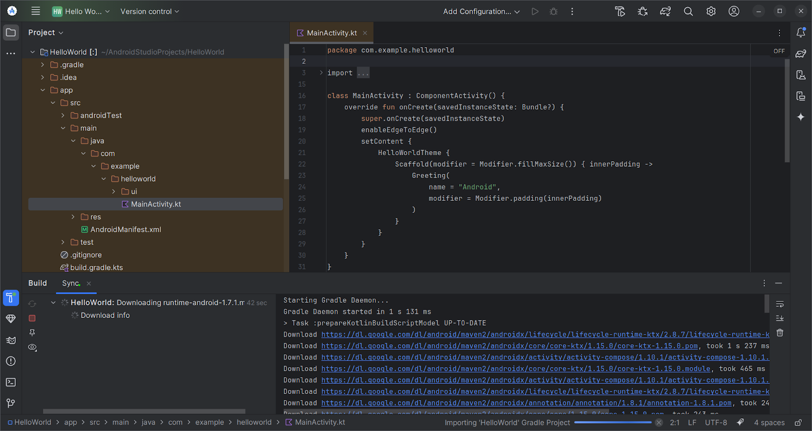

Important: this guide assumes that you have already set up the Linux Development Environment on your Chromebook. If not, please refer to my Other Guides
What is Android Studio
Android Studio is the official IDE (Integrated Development Environment) for creating your own Android (and more recently, cross-platform) applications.
Not just one program, Android Studio is an entire suite of tools that allows you to build great apps.
All this is accompanied by extensive documentation within the IDE, and on the official Android website
Disk space requirements
To install Android Studio and its associated SDK and Tools takes a fair amount of disk space. Here is an example of the total disk space required inside your Linux Development Environment:
Phase | Disk usage (GB) |
Hardware acceleration (KVM) | 1.2 |
Android Studio (.deb) | 3.2 |
SDK/Tools (with Emulator) | 3.4 |
Project dependencies | 3.1 |
Small project build | 2.0 |
Total | 12.9 GB |
Your mileage may vary, depending on whether or not you install the emulator, and the size of your first Android project and its dependencies.
If you think you may need more disk space allocated to your Linux Development Environment, in ChromeOS, go to Settings | About ChromeOS | Linux Development Environment | Disk Size ... click the Change button to open the Resize Linux Disk dialog
Install prerequisites
Hardware acceleration
Assuming your Chromebook meets the criteria, you may see a message during the initial setup wizard for Android Studio titled Emulator Settings ... check this page to see if your hardware meets the requirements (skip the HAXM section). If your hardware meets the requirements, install KVM and its dependencies by running the following command:
sudo apt install qemu-kvm libvirt-daemon-system libvirt-clients bridge-utilsNano plain-text editor
The implementation of Debian/Linux on ChromeOS does not include the nano plain-text editor, so unless you wish to use Vim, install nano using the following command:
sudo apt install nanoDownload Android Studio
We will start by downloading the Debian package archive (.deb) file from the official Android website ... click here to get the latest stable version
Be sure to download the ChromeOS version, with the filename ending in -cros.deb (approx 1.1 GB) ... save this file to the Downloads folder on your Chromebook.
Install .deb File
When the download is complete, locate the file in your My Files app, right-click on it, and select Install with Linux from the menu.
It takes a few seconds for ChromeOS to read the file information, then you can click the Install button ... you should see a dialog saying that the Installation successfully started.
After clicking OK, you may follow progress for the installation by clicking the Notification count in your dock ... it should take about one minute to complete.
Do not start Android Studio just yet, as we need to make a small adjustment first.
Edit .desktop File
As of April 2025, fresh installs of Android Studio come with the old .desktop file, but a new message similar to the following:
Note in the message the difference between bin/studio.sh and bin/studio ... both these files exist under the Android Studio install location, but we need to fix the launcher (.desktop) file to point to the new executable file, rather than the old shell-script.
Start by opening a Linux Terminal and entering the following command:
sudo nano /usr/share/applications/android-studio.desktopUse the arrow keys to reach the end of the line beginning with Exec= and remove the .sh (dot and file extension) so that the line reads as follows:
Exec=/opt/android-studio/bin/studio
When done, press Ctrl+S to save the file, then Ctrl+X to exit nano.
Now you can start Android Studio
Upon launching Android Studio for the first time, you'll need to install the Android SDK, Platform Tools, and an Emulator (the emulator is optional) ... follow the wizard, where the defaults should be enough to get you started.
The very first dialog has its text truncated, and is partly illegible. Here is the full text:
Allow Google to collect usage data for Android Studio and its related tools, such as how you use features and resource usage along with software identifiers such as package name and class names and plugin configuration. This data helps improve Android Studio and is collected in accordance with Google's Privacy Policy. Anonymous and aggregated usage data may be shared with Google's partners to improve Android Studio.
You can always change this behavior in Settings | Appearance & Behavior | System Settings | Data Sharing.
Welcome screen for the wizard ... click Next when ready
For the Install type, select Custom then click the Next button:
Android SDK and the latest Platform Tools are already preselected ...
You may deselect the Emulator (virtual device) if you don't want it:
Confirm your selections before hitting the Next button:

You must Accept the Licensing Agreement before continuing:
This is the notice you would see regarding Hardware Acceleration:
Download process ... this will take a few minutes:
When completed, you may click the Finish button:
This is the regular Welcome dialog whenever you start Android Studio.
Note the message you would see regarding the old version of startup:
Before starting/opening a project, you should decide if you want to keep your Android projects inside your Linux Development Environment, or completely separate by sharing a folder from ChromeOS ...
Keep projects inside LDE
If you wish to go with the default setting of keeping your project files inside your Linux Development Environment, then be aware that you can still access them in ChromeOS (using the My Files app) by going to Linux files | AndroidStudioProjects. This would require the LDE to be running, as ChromeOS needs to access files within Linux itself.
Keep projects Separate
If you wish to keep them separate, then create a new folder in My Files called Projects, and share it by right-clicking the new folder and selecting Share with Linux from the menu.
Back at the Android Studio welcome screen, click the gear icon in the bottom-left corner, and select Settings ... go to Appearance & Behavior | System Settings, and next to Default project directory, click the little folder icon to open the Select Path dialog:
In the Select Path dialog, collapse the home folder then Expand the mnt folder (and subfolders, as necessary) to select the /mnt/chromeos/MyFiles/Projects folder you created/shared earlier ... click Projects once to highlight it, then click the OK button:
Back at the Android Studio welcome screen, click New Project and with Phone and Tablet selected under Templates, select Empty Activity, then click the Next button:
Next to Name, type Hello World, then click the Finish button:
Android Studio will take a few minutes to download the required dependencies and sync your project for the first time. You can follow its progress by opening the Build tool window (the hammer icon at bottom-left):

When it's done, click the green Run icon on the toolbar, or press Shift + Search + 0 (zero) ... (this is equivalent to Shift + F10 on a conventional keyboard) ... Android Studio will require a few more minutes to launch the Emulator and run your project:
Emulator from Command Line
You may run into issues if you attempt to start an emulator from the command line, using the default setup.
As of April 2025, Android Studio places virtual devices (for ChromeOS installs) in the ~/.config/.android/avd folder, whereas the emulator application looks for them in the ~/.android/avd folder.
A simple workaround is to set the ANDROID_AVD_HOME environment variable ... you can do this by adding the following two lines to the end of your ~/.bashrc file. Start by opening the file for editing in the nano plain-text editor:
nano ~/.bashrc
# Add these two lines to the end of the file:
ANDROID_AVD_HOME=$HOME/.config/.android/avd
export ANDROID_AVD_HOMESave the file and exit by pressing Ctrl+S then Ctrl+X
Bash script/alias for Emulator
Script
You may wish to start the emulator yourself at any time, rather than having to go through Android Studio. To do this, you could create a bash script, similar to the following:
#!/bin/bash
$HOME/Android/Sdk/emulator/emulator \
-accel on -avd Medium_Phone_API_36Be sure to give your new script executable permission, e.g.:
chmod u+x ~/bin/avd.shAlias
Now that you've created a script and granted executable permission, you could make running it even easier by creating a simple alias ... to do so, start by opening the ~/.bash_aliases file for editing (if it does not already exist, it will be created upon saving):
nano ~/.bash_aliases
# Add the alias, e.g.:
alias avd='~/Bin/avd.sh'Save the file and exit by pressing Ctrl+S then Ctrl+X
You can either restart your LDE, or run the following command for changes to take effect:
source ~/.bash_aliases